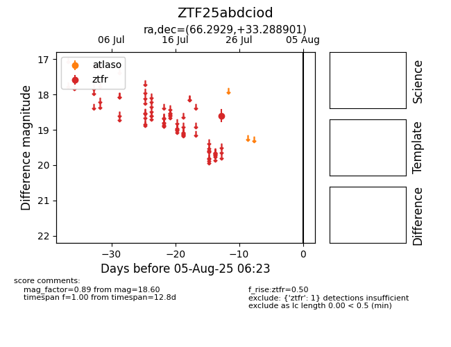

Target ZTF25abdciod at 2025-08-06 17:45, see:
FINK: fink-portal.org/ZTF25abdciod
Lasair: lasair-ztf.lsst.ac.uk/objects/ZTF25abdciod
ALeRCE: alerce.online/object/ZTF25abdciod
alt names
ZTF25abdciod (ztf,fink)
coordinates:
equatorial (ra, dec) = (66.2929,+33.28890)
galactic (l, b) = (166.1073,-11.12458)
photometry
last ztfr=18.60
1 ztfr detections
